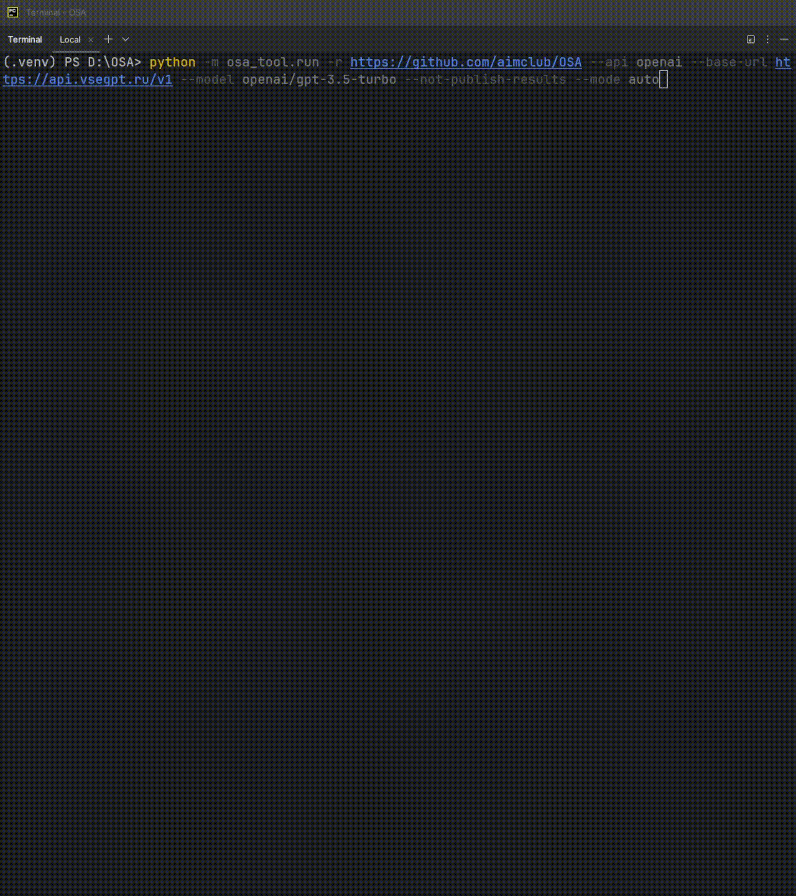

ModeScheduler¶
An interactive CLI tool for managing action plans for OSA
Builds and manages a task plan for a selected repository. The plan can be:
- basic — a predefined set of tasks
- auto — generated by an AI model based on the repository contents
- advanced — adjusted by the user during CLI execution
The CLI allows user to:
- View the generated plan
- Confirm or cancel execution
- Edit the plan interactively
- Manage GitHub Actions workflows alongside other tasks
How it works?¶
Here is a short demo:

Usage¶
Run Open-Source-Advisor using the following command:
python -m osa_tool.run -r {repository} [--mode {mode}] [--api {api}] [--base-url {base_url}] [--model {model_name}]
Required Argument¶
-r, --repository - URL of the repository to be analyzed and processed.
Available Modes¶
Before starting, the user needs to specify which mode they want to use:
| Mode | Description |
|---|---|
basic |
Runs a predefined set of actions: generates Report, README, Community docs, About section. Organize the repository structure by adding standard 'tests' and 'examples' directories if missing. |
auto (default) |
Automatically builds a plan using an AI model based on repository analysis. |
advanced |
Allows the user to manually select and configure which improvements and actions will be applied to the repository. |
What Happens Next¶
Once the CLI command is execute, OSA will:
- Analyze the repository
- Display informational tables in the console:
- Repository and environment info - general project details, active configuration
- Planned actions — a table listing actions and improvements that are scheduled to be applied.
- Inactive actions — a table showing actions that will not be applied based on the current plan.
Confirming the Action Plan¶
- Enter
yor simply press Enter — to accept the proposed plan and continue execution. - Enter
n— to cancel the operation. The program will immediately exit without making any changes - Enter
custom— to enter manual editing mode, where user can adjust the plan interactively.
Manual Plan Editing Mode¶
In custom mode:
- A list of editable actions is displayed.
- Available commands:
helpor?— displays a table with descriptions of all editable keys.multi-bool— enables batch editing of boolean-type keys.done— finishes the editing session and displays the current plan.- To edit an action, enter its name.
- For each selected action:
- If it is a boolean value (True/False), a prompt will request setting it to:
y— enablen— disableskip— leave unchanged
- If it is a string or list:
- A new value can be entered.
- Leave empty to skip.
- Enter
Noneto explicitly disable the value.
- Before entering a new value, the system will display:
- A short description.
- Allowed values (if available).
- An example (if available).
- The current value.
Once the user type done:
- The updated tables with planned actions and inactive actions will be displayed again.
- The program will prompt the user one more time to confirm the updated plan
- Available options:
- Confirm with
yor Enter - Cancel with
n - Re-enter manual editing mode with
custom
This interactive loop continues until the user explicitly confirms or cancels the operation.
This mode allows for precise control over which improvements, documentation, or workflow-related actions will be applied to the repository.
Table of Available Keys¶
| Parameter | Aliases | Type | Description | Default | Choices |
|---|---|---|---|---|---|
| repository | -r, --repository |
str | URL of the GitHub repository | https://github.com/aimclub/OSA |
— |
| mode | -m, --mode |
str | Operation mode for repository processing: basic, auto (default), or advanced. |
auto |
basic, auto, advanced |
| branch | -b, --branch |
str | Branch name of the GitHub repository | null |
— |
| output | -o, --output |
str | Path to the output directory | null |
— |
| config_file | --config-file |
str | Path to custom configuration file (TOML format) | null |
— |
| use_single_model | --use-single-model |
flag | Use the same model for all tasks (if disabled, use specific models for each task type) | true |
— |
| api | --api |
str | LLM API service provider | openai |
itmo, openai, ollama |
| base_url | --base-url |
str | URL of the service provider. See available urls | https://openrouter.ai/api/v1 |
— |
| model | --model |
str | Specific LLM model to use. See available providers and models | gpt-3.5-turbo |
— |
| model_docstring | --model-docstring |
str | Specific LLM model for docstring generation tasks | Temprorary inherited from default model | — |
| model_readme | --model-readme |
str | Specific LLM model for README generation tasks | Temprorary inherited from default model | — |
| model_validation | --model-validation |
str | Specific LLM model for validation tasks | Temprorary inherited from default model | — |
| model_general | --model-general |
str | Specific LLM model for general tasks | Temprorary inherited from default model | — |
| top_p | --top_p |
str | Nucleus sampling probability | 0.95 |
— |
| temperature | --temperature |
str | Sampling temperature to use for the LLM output (0 = deterministic, 1 = creative). | 0.05 |
— |
| max_tokens | --max_tokens |
str | Maximum number of tokens the model can generate in a single response | 4096 |
— |
| context_window | --context_window |
str | Total number of model context (Input + Output) | 16385 |
— |
| attachment | --attachment |
str | Path to a local PDF or .docx file, or a URL to a PDF resource | null |
— |
| translate_dirs | --translate-dirs |
flag | Enable automatic translation of directory names into English | false |
— |
| convert_notebooks | --convert-notebooks |
list | Convert Jupyter notebooks to .py format. Provide paths, or leave empty for repo directory |
— | — |
| delete_dir | --delete-dir |
flag | Delete the downloaded repository after processing | false |
— |
| ensure_license | --ensure-license |
str | Enable LICENSE file compilation | null |
bsd-3, mit, ap2 |
| no_fork | --no-fork |
flag | Do not create a public fork to the target repository | false |
— |
| no_pull_request | --no-pull-request |
flag | Do not create a pull request to the target repository | false |
— |
| community_docs | --community-docs |
flag | Generate community-related documentation files | false |
— |
| docstring | --docstring |
flag | Automatically generate docstrings for Python files | false |
— |
| report | --report |
flag | Analyze the repository and generate a PDF report | false |
— |
| readme | --readme |
flag | Generate a README.md file based on repository content |
false |
— |
| refine_readme | --refine-readme |
flag | Enable advanced README refinement. This process requires a powerful LLM model (such as GPT-4 or equivalent) for optimal results | false |
— |
| requirements | --requirements |
flag | Generate or refine a requirements.txt file based on repository content. | false |
— |
| organize | --organize |
flag | Organize the repository by adding standard tests and examples directories if missing |
false |
— |
| about | --about |
flag | Generate About section with tags | false |
— |
| generate_workflows | --generate-workflows |
flag | Generate GitHub Action workflows for the repository | false |
— |
| workflows_output_dir | --workflows-output-dir |
str | Directory where workflow files will be saved | .github/workflows |
— |
| include_tests | --include-tests |
flag | Include unit tests workflow | true |
— |
| include_black | --include-black |
flag | Include Black formatter workflow | true |
— |
| include_pep8 | --include-pep8 |
flag | Include PEP 8 compliance workflow | true |
— |
| include_autopep8 | --include-autopep8 |
flag | Include autopep8 formatter workflow | false |
— |
| include_fix_pep8 | --include-fix-pep8 |
flag | Include fix-pep8 command workflow | false |
— |
| include_pypi | --include-pypi |
flag | Include PyPI publish workflow | false |
— |
| python_versions | --python-versions |
list | Python versions to test against | [3.9, 3.10] |
— |
| pep8_tool | --pep8-tool |
str | Tool to use for PEP 8 checking | flake8 |
flake8, pylint |
| use_poetry | --use-poetry |
flag | Use Poetry for packaging | false |
— |
| branches | --branches |
list | Branches to trigger workflows on | [] |
— |
| codecov_token | --codecov-token |
flag | Use Codecov token for coverage upload | false |
— |
| include_codecov | --include-codecov |
flag | Include Codecov coverage step in unit tests workflow | true |
— |
| validate_paper | --validate-paper |
flag | Check whether the experiments proposed in an attached research paper can be reproduced using the selected repository | false |
— |
| validate_doc | --validate-doc |
flag | Check whether the experiments proposed in an attached documentation file can be reproduced using the selected repository | false |
— |